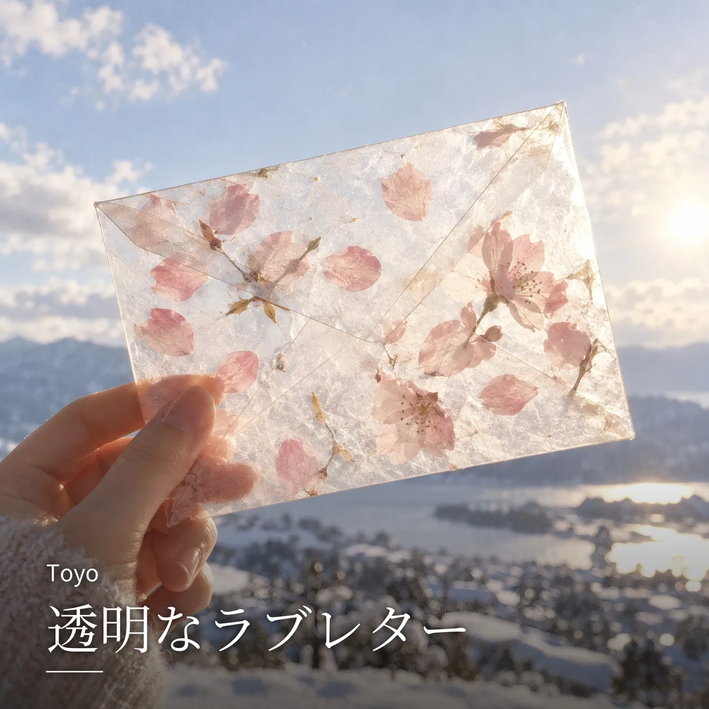

全曲 / 透明なラブレター

NEW
透明なラブレター
Toyo · lo-fi indie pop · 移動・ドライブ / 朝・はじまり
LYRICS
信号が青に変わるたびに 君のいない未来を渡ってる 靴紐がほどけるみたいに 気持ちはいつも少し遅れる 自販機の前で立ち止まって 缶コーヒーの温度で季節を知る 君が寒くないように 手紙の中に春を詰めた 僕らはきっと 言葉の下手な生き物で うまく言えない「好き」が渋滞してる もしこの声が電波になれるなら 夜空に投げて 君のWi-Fiを探すよ イヤホンの中で世界が鳴る 君のいない歌は少し早いテンポ スマホの画面を撫でるたび 未来よりも過去が明るく光る 電車の窓に映る僕が 少しだけ君に似てきた きっと人は恋をすると 鏡の中まで感染するんだ 誰かが言ってた「恋は重力」 落ちるんじゃなくて 引き寄せられるだけ もし心臓にGPSがあるなら きっと君の近くで鳴ってる 僕らはきっと 不器用な詩人で 語彙の少ない愛で手を繋いでる もしこの想いが届かなくても 風が運ぶだろう 透明なラブレター 君のいない朝が 今日も始まる でも不思議と寂しくはないんだ 胸の奥でまだ文字が光ってる “好き”の一文字 消えずに残ってる
NEXT
次に聴くなら


FOLLOW
新曲を、いちばん早く。
Spotify でフォローすると、新曲が「Release Radar」に自動で届きます。